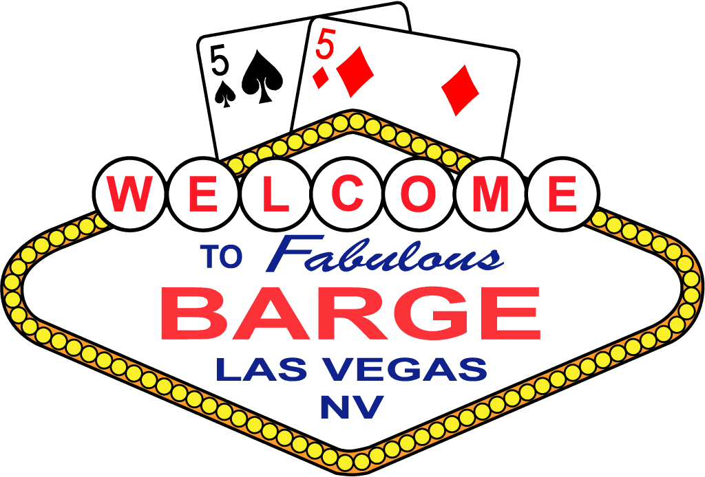

BARGE Rulebook
- Christopher J. Mecklin
- Tim Showalter
Preface
This rulebook is an update of Christopher J. Mecklin's excellent rulebook from July 2021. The rulebook had fallen a bit out of date, since it was written for the 2021 BARGE tournaments; and BARGE being BARGE, and poker players being poker players, some newer games have been made up.
This book was initially reconstructed in 2024 from the PDF of the 2021 edition. Many formatting errors were introduced. Many, but likely not all, have been fixed.
This rulebook codifies various poker games that may feature, or have been featured, at BARGE. It is a supplement for the host casino's rulebook and the TDA rules, not a replacement for them. This rulebook does duplicate some of them, but more importantly, it covers the things that are unique to BARGE.
Web version and PDF Version
This version of the rulebook is provided in both a web page and a LaTeX-based PDF book which is better for printing.
The web version represents the full book. Currently, it is continually updated at https://ts4z.github.io/barge-rulebook/ when there are changes. At that site, you can print the web version of the book. This prints as a web page and will lack a table of contents.
For printing, the PDF version is recommended. This version is available at https://ts4z.github.io/barge-rulebook.pdf. This comes with a nice table of contents and page numbers. This version includes hyperlinks when viewed electronically, but it is not as easy to navigate as a web page or on a mobile device. (This version may also be slightly out of date compared to the web version, as updating it requires an extra trivial step, easily forgotten.)
Improving this Rulebook
Please report suggestions to Tim Showalter so we can update the rulebook.
The source code for the rulebook available on GitHub at https://github.com/ts4z/barge-rulebook. You are encouraged to send pull requests. Of course, if you're not technically inclined, you can provide suggestions over email, or over beers. In all cases, substantive text changes are preferred over vague suggestions. If possible, please try to match the style of other games or rules.
Having a little more context on each game would be welcome.
Because the rulebook is generated in multiple versions, there are some technical limits as to what we can provide. I apologize in advance if I am unable to accomidate some suggestions.
Preface from the 2021 Edition
(This section has been slightly abridged from the 2021 edition.)
This document contains the rules of many forms of poker, some of which will be played in BARGE 2021 tournaments, others in tournaments in past years, and yet others only in BARGE cash games or home games.
I obtained these rules from a copy of the official rule book for the XXV 25-Game Mix poker tournament played at BARGE XXV in 2015. That rule book was originally written by Patrick Milligan and Rich Bremer and is reproduced here with their permission. Also, rules for some of the stranger games came from an archived version of the BARGE website, called the BARGE Poker Game Rule Archive. I have also referred to Bob Ciaffone’s Robert’s Rules of Poker. [This link has been updated, as RRP has moved with Bob Ciaffone's passing.]
Note that the rule book, unless otherwise noted, is written under the assumption that the games are being played in a limit format, with a small betting limit and a large betting limit. Please make appropriate adjustments when playing that game in the pot-limit or no-limit format.
This document also includes Appendices explaining the “Sevens Rule” (originally written by Michael Weisenberg) and various Lowball Scales (written by me [Chris Mecklin]).
Common Rules and Variations
This section describes rules common to all games or some games, as well as a few general variants played at BARGE.
In general, a host casino is assumed to use its own rulebook, which will cover a lot of the same topics. However, we do not know of any poker rooms that have rules for games that involve dice (as of this writing).
Limit
In limit poker, also called fixed-limit poker, the size of the raise a player makes is predetermined by the structure of the game or tournament. The structure will specify the size of the small bet, the large bet, the small and big blinds for games that use blinds, and the ante and bring-in for games that use them. It is typical in modern play for flop and draw variations to use blinds and for stud variations to use antes and a bring-in. Antes are almost never used in flop or draw variations played in either the limit or pot-limit format, but are commonly implemented in conjunction with the blinds in the no-limit format.
As an example, suppose you are playing limit holdem in a tournament at the 100/200 level. This means that the small blind is 50 (typically half the small bet), the large blind is 100, the small bet is also 100, and the large bet is 200. As this is a flop game, the small bet limit is used pre-flop and after the flop, and the large bet limit is used on the turn and river. In a game with only two rounds of action rather than four, such as California Lowball, the pre-draw action is at the small bet limit and the post-draw action at the large bet limit.
For a second example, suppose you are playing razz in a tournament at the 200/400 level with a 50 ante and a 75 bring-in. Each player will put in 50 before the first three cards are dealt and the player with the highest door card is forced to make a 75 bring-in, with an option to instead complete to 200, the full size of the small bet. The small bet of 200 is used for action on third and fourth streets (two rounds), while the large bet of 400 is used on fifth, sixth, and seventh street (three rounds of action). Most stud variations operate on this basis, with the bring-in being either the player with the highest or lowest door card, depending on the game.
An all-in wager of less than half the bet does not reopen the betting for a player that has already acted and is in the pot for all previous bets. A player facing less than half a bet may fold, call, or complete the bet. For example, suppose a player has made an all-in wager of 100 when the limit is 400. A subsequent player who has not yet acted may fold, call 100, or complete to 400. An all-in wager of a half bet or more is treated as as a full bet, and a player may fold, call, or make a full raise. For example, suppose a player has made an all-in wager of 300 when the limit is 400. A subsequent player wishing to raise would make it 300+400=700.
The number of raises that can be made per streeet varies between different poker rooms. Often a bet and 3 raises is allowed (i.e. it is possible to 4-bet but not to 5-bet); sometimes a bet and 4 raises is allowed. Often the cap on the number of raises is removed when two players are heads-up in a cash game, but typically not for a tournament. Check and raise is usually allowed, except in limit California Lowball.
No-Limit
In no-limit poker, when a player chooses to bet or raise, the size of the raise can be anywhere from the minimum bet to all-in (i.e. all of the chips the player has in front of them, or what many of us call the “jam”). The minimum bet will be equal to the size of the large blind. The minimum raise is the size of the last wager. A player who wishes to bet or raise but does not have enough chips to make the minimum wager may go all-in with their remaining chips.
Many flop games have an ante structure. Any ante does not impact the minimum or maximum bet.
Stud variations without blinds are rarely played in a no-limit format. The minimum bet would be the size of the bring-in in such a format.
As an example, suppose you are playing No-Limit Hold'em in a tournament at the 100/200 level. Unlike limit, this means that the small blind is 100 and the large blind is 200. The action folds to the player on the button, who says raise.
The minimum raise in this situation would be 200 more (making it 400 to go), and the maximum raise is all chips the button has. Suppose the button raises 300, making it 500 to go. The small blind then may fold, call 300, or raise anywhere from 300 (making it 800 to go) to all their chips. Suppose the small blind raises 700, making it 1200 to go. The big blind’s options would be to fold, call 1000 (i.e. 300+700), or raise a minimum of 700. Suppose the big blind folds. The button may now either fold, call 700, or raise a minimum of 700. In our case, the button calls, and a flop is dealt.
Unlike limit poker, the half bet size rule does not apply to no-limit poker. A player who has already acted and is not facing a fullsize wager may not subsequently raise an all-in bet that is less than the minimum bet or less than the full size of the last bet or raise.
There are an unlimited number of raises available to the players. Check and raise is allowed.
Pot-Limit
In pot-limit poker, when a player chooses to bet or raise, the size of the raise can be anywhere from the minimum bet to the size of the pot. The minimum bet will be equal to the size of the large blind. The minimum raise is the size of the last bet or raise. A player who wishes to bet or raise but does not have enough chips to make the minimum wager may go all-in with their remaining chips.
Unlike limit and no-limit, a player is entitled to the current count of the pot.
Stud variations without blinds are sometimes played in a pot-limit format, with the minimum bet being the size of the bring-in.
The maximum bet in a round without action is simply the size of the pot.
The maximum raise is the size of the pot after the call of the initial action.
Examples
For an example, suppose you are playing in a pot-limit Omaha tournament at the 100/200 level. Like no-limit, this means that the small blind is 100 and the large blind is 200. In this example, the action folds to the player on the button, who says raise.
The minimum raise in this situation would be 200, making it 400 to-go.
The maximum raise is the size of the pot. In this case, that is 700 to-go, or a raise of 500 on top of the 200 blind. That is, the button says "raise", allowing them to call 200; there is now that 200 + 100 small blind + 100 big blind in the pot; the button can make it 700 to-go.
In this example, suppose the big blind calls. There is 1500 in the pot (100 small blind + 700 big blind + 700 button). On the flop, the big blind bets out the maximum, 1500. The button says "raise pot". It is now 6000 to-go (1500 pot+1500 bet+1500 call = 4500 raise).
A common shortcut is that a pot raise of a pot bet is 4✕ the pot bet, which can be seen in the example above.
More generally, a pot raise of any bet is 3✕ the bet, plus any other money behind. This requires a little bit more explanation.
For example, suppose we have a new hand at the 100/200 level. The button limps, the small blind completes and the big blind checks. The pot is 600.
On the flop, the small blind bets out 200. The big blind calls. The button says "raise pot". He laboriously puts out 200, then counts 400 (pot), plus the three 200 bets this round, and makes it 1200 to-go.
One of the players at the table will usually "helpfully" pipe up at this point and point out that the shortcut is to take 3✕ the bet, plus any money behind. In this case, that's 3✕200 + 200 (caller) + 400 (pot) and that's still 12 to-go.
For a stud example, suppose you are playing a pot-limit London Lowball tournament where the ante is 100 and the bring-in is 150. With eight players, the pot starts at 8 ✕ 100 = 800. Player A brings it in for 150. Player B says raise. The minimum raise Player B can make is 150 (the size of the bring-in), to 300 to-go; and the maximum raise is 800+150+150 = 1100, to 1250 to-go (call 150 + raise of 1100).
Suppose Player B raises 500, to 650 to-go.
Player C then says "pot". A pot-sized raise will be 3✕650, + 950 = 2900 to-go, or a raise of 2250.
Unlike limit poker, the half bet size rule does not apply to pot-limit poker. A player who has already acted and is not facing a full-size wager may not subsequently raise an all-in bet that is less than the minimum bet or less than the full size of the last bet or raise.
There are an unlimited number of raises available to the players. Check and raise is allowed.
Ties & Odd Chips
When the situation arises where a pot needs to be split, such as in a split-pot game or when two or more players tie for the winning hand, it is often the case that there will be an odd chip or chips that will need to be assigned. The conventions for splitting pots and dealing with odd chips are largely taken from the TDA rules. The pertinent sections are General Concepts 20 and 21.
- An odd chip is broken down into the smallest denomination in play.
- No player may receive more than one off chip.
- When two or more hands tie, an odd chip or chips are awarded as follows: a. In games with a button, the first hand clockwise from the button (i.e. “worst position”) gets the odd chip; b. In stud games, the odd chip will be given to the hand with the highest card by suit, where the ordering of suits is spades, hearts, diamonds, clubs; c. In High-Low split games, the high hand receives the odd chip in a split between the high and low hands.
Some split-pot games that are not High-Low in the traditional sense are not explicitly covered in the TDA rules. Here is how odd chips will be assigned:
-
In split games that involve a five-card hand and a four-card hand, the five-card hand is treated as the high hand. Examples of such games include Badacey, Badeucy, Razzdugi, and Action Razzdugi. For instance, an odd chip in Badacey would be awarded to the player with the best A-5 lowball hand, not the best badugi hand.
-
In split pot games that involve a draw hand, where the player uses all five cards in their hand, and an Omaha hand, where the player uses two cards in their hand and three cards from the board, the draw hand is treated as the high hand. Examples of such games include Dramaha, Triple-Draw Dramaha, and Dramaha 49. For instance, an odd chip in Dramaha 49 would be awarded to the player with the best draw point value hand, not the best Omaha high hand.
-
In Sohe (Simultaneous Omaha and Hold’em), where the players split a six-card hand into a four-card part used for Omaha and a two-card part used for Hold’em, the Omaha hand is treated as the high hand.
For any unusual situations that are not explicitly covered, the decision of the tournament floor person would be final. The tournament staff will likely use TDA Recommended Procedure 14 (RP-14), which states that “randomness may be applied to special situations”.
Big Blind Ante
In games with a big blind ante, the player in the big blind posts an ante for the entire table. This amount will be listed in the structure for the game or tournament, but is usually the amount of the big blind.
Tournaments utilizing a big blind ante will also list the number of players at which the ante will be reduced, usually to the amount of the small blind. At BARGE 2024, this was at four players.
This rule tends to differ from poker room to poker room, so it is important to check the structure sheet.
Discussion
Traditionally in no-limit Texas Hold’em tournaments, the blind structure used was that two players posted blinds (the small blind and big blind) each hand. Additionally, most tournaments featured an ante that would be posted by each player before every hand, typically starting a few levels into the tournament. This is done to further drive the action by increasing the amount of chips and thus the incentive to enter the pot.
One of the disadvantages of having every player make an individual ante is time, in terms of having the dealer gather up the antes, make change, remind forgetful players to ante, and to deal with disagreements about unposted antes.
In the 2010s, a new idea known as the big blind ante was introduced in tournament poker and quickly became the standard, where the player in the big blind would post an ante for the entire table. One should think of the big blind ante as a shared ante that all players take turn in paying rather than an extra “penalty” for being in the big blind. The reason why the big blind ante is not assigned to another position, such as the button, is that every hand will have a player in the big blind but sometimes there will be a dead button.
Some controversies about the big blind ante include: (a) how large should it be; (b) should the size of the big blind ante be reduced in short-handed situations; and (c) how should the situation be handled where the player in the big blind does not have sufficient chips to post both the ante and the big blind. One should always consult the structure sheet and/or the tournament director to verify how any particular tournament is handling the big blind.
Differences with TDA Recommended Procedure-11
TDA Recommended Procedure-11 recommends that the big blind ante amount not be reduced. BARGE prefers the rule described above.
The "which comes first" problem has been contentious for many years among the TDA. In 2024, the TDA changed RP-11 and recommended that the blinds would come first. Previously, in 2022, there was no recommendation, and in 2019, they recommended the ante came first.
Bomb Pot
The bomb pot is a variation of a no-limit Hold’em tournament used at BARGE starting in a 2021 tournament. In this variation, all players post an ante pre-flop, and there is no pre-flop betting. Instead, the three-card flop is dealt and action commences with the player to the left of the button. The minimum bet size is the size of the ante. Otherwise, play is as normal for no-limit Texas Hold’em. A button is still used and rotated around the table to determine the player that will be first to act on each betting round.
Bomb pots are common in cash games, usually on a dealer change.
Bounty
A bounty in a tournament is a prize that is won by eliminating a player.
In a split-pot game, the bounty is typically awarded to the winner of the high hand/five-card hand portion. In a chopped pot, the bounty winner will be the player in worst position.
The winner of the tournament keeps their bounty.
At BARGE 2021, bounties will be used in the No Limit California Lowball tournament as a “green chip” ($25) bounty per player.
Jam-or-Fold
Jam-or-Fold is a variation of a poker tournament where the player has only two options for their initial action. They can either go all-in (“jam”) or fold.
Lammers
Lammers are re-buy chips that players receive at the beginning of a tournament, and at BARGE is most usually used in the Pot-Limit Omaha event. Players may turn in any or all of their lammers before the start of the hand to receive tournament chips equal to the assigned value of the lammers. Players may not redeem lammers during the play of a hand. When a player busts but has remaining lammers, they must use at least one lammer before the next hand.
For an example of lammer usage, consider the 2020 BARGE PLO event. In this tournament, players received T10000 in chips and two lammers worth T5000 chips each. A player could immediately redeem both lammers before the first hand is dealt, thus starting with a T20000 stack; however, when this player busts they are out of the tournament.
Another possibility is that when a player busts, they can redeem one of the two lammers to have T5000.
Yet another possibility is that a player, reduced to a T2000 stack, can redeem one lammer to increase their stack size to T7000.
Players are required to redeem all remaining lammers after a certain level, which was Level 12 at BARGE 2020. This is done to prevent players from holding onto lammers until deep in the tournament, at which point the value of the lammers compared to the size of the blinds is so small that such a player would be best served by folding every hand and trying to “farm” up the payout schedule.
Shootout
A shootout is a tournament where instead of having the number of tables gradually reduced by breaking tables and moving players to replace eliminated players, each table players down to a single winner, and those winners advance to play each other. In a large enough tournament, there could be several levels. As an example, a six-handed shootout tournament could start with 216 (which is 6³) players at 36 tables, with the 36 table winners advancing to a second round of 6 tables, and those winner advancing to a final table of six. Typically some tables will have one few player if the number of entrants isn’t a perfect square or cube. For example, suppose 75 players enter a nine-handed shootout tournament. Since 81 players (9²) would accomodate exactly 9 nine-handed tables, with table winners advancing to a final table, in this case six of the nine tables would start with one fewer player.
Sometimes at BARGE shootouts have been played such that the final two players from each table advance to the next round, rather than just a single player.
Short Deck
Short Deck, also referred to as a “stripped deck”, is when certain denominations of cards are removed, leaving a smaller deck. The most common such variation is when a deck of 36 cards is used, where all of the deuces, treys, fours, and fives have been removed, leaving a deck with sixes, sevens, eights, nines, tens, Jacks, Queens, Kings, and Aces in the four suits. Refer to the rule pages for Short Deck Texas Hold’em and Short Deck Omaha, as there are some changes to the rank of hands made for combinatorial reasons.
Another variation, used in Mexican poker, is to remove the eights, nines, and tens from the deck and to add a single joker, leaving a deck of 41 cards. Refer to the rule page for Mexican Poker for further details in the play of this variation.
Win the Button
Win the Button is a variation of a poker tournament where the player who wins the hand receives the button for the subsequent hand. Thus, the button does not rotate as typical and players can end up paying (or not paying) blinds several hands in a row. If there is a chopped pot won by two or more players, the winning player in the worst position on that hand receives the button for the next hand. This variation is typically not used in split-pot games.
Dice Procedures
A few games involve the players rolling dice in order to influence the game. In these games, the dice (or die) are rolled by the player on the button. Dice must land flush on the table having traveled at least the distance to the far side of the dealer’s box.
Dice must tumble. They may not be slid.
The dealer is responsible for calling a valid or invalid roll.
Traditionally, there is a price to be paid for not rolling the dice properly. Experienced BARGE players will explain current tipping procedure.
Stud Procedures
In all stud games, it is required of each player that they do not alter or obfuscate the order in which they have received their up cards.
Poker Variants
Poker variants are listed here alphabetically, including both well-known (Hold'em) and less well known (Bidrectional Chowaha). Of course, some of the names are surprising (Chowaha is not next to Four-Card Chowaha) but they are still technically alphabetized.
There are a lot of games here. Historically at BARGE, Chowaha is quite popular, and the Pot-Limit Binglaha game has been known to run very late on Saturday night.
Mixed games based around HORSE are mainstays, particularly with something substituting out for Razz. One variant is HOSER, which sometimes means Razz is gone and Action Razz is in its place.
Oklahoma appears to be popular with dealers for a reason that the "cash game" rule should make clear.
Ace-to-Five Triple Draw
Forced Money
The game is played with a button and blinds.
Dealing Procedure
Each player is dealt five cards face down, followed by a round of betting at the small bet limit.
Each player in turn discards zero to five cards from their hand. Once all of the discards have been announced, the dealer will deal each player an appropriate number of replacement cards. This is followed by a round of betting at the small bet limit.
Then there is a second draw, followed by a round of betting at the big bet limit.
This is followed by a third draw, followed by a round of betting a the big bet limit.
This is followed by a showdown.
Evaluating the Showdown
The best five-card California lowball hand wins the pot.
NOTE: This game is usually played limit, but is sometimes played as a pot-limit game. It is not played with a joker/bug.
Action Razz
Forced Money
The game is played with antes. The high card on the board by rank first and then by suit brings it in. The K♠ is the highest possible card followed by the K♥, K♦, K♣, and so on.
Dealing Procedure
Starting with the player in seat one, each player is dealt two cards face down then one card up, followed by a round of betting at the small bet limit.
A second up card is dealt to all active players. This is followed by a round of betting at the small bet limit. Action starts with the lowest hand showing.
A third up card is dealt to all active players. This is followed by a round of betting at the big bet limit.
A fourth up card is dealt to all active players. This is followed by a round of betting at the big bet limit.
A third down card is dealt to all active players. This is followed by a round of betting at the big bet limit. This is followed by a showdown.
Evaluating the Showdown
The best five-card California low hand wins the pot, but with the provision that a player must have at least one face card (Jack, Queen, or King) among their seven cards to qualify.
A hand that qualifies is called a “Face” hand, while a hand that does not qualify is called a “Butt” hand. It is not necessary to play a face card in the best five-card California low hand, but any hand containing a face card defeats any hand without a face card.
As an extreme example, the hand A♥ 2♥ 3♠ 4♣ 5♦ 6♠ 7♣, which would be the nuts in razz as it is typically played, would lose to K♥ K♦ K♠ K♣ Q♦ Q♠ Q♣, which would be the nut low in typical razz. The first player has a “Butt” Five, while the second player has a “Face” Queens full of Kings.
If two or more players reach showdown and none of the players have a face card, then the winner is determined based on the best five-card California low hand (i.e. just like typical razz).
A more realistic example is shown in the following hand, with three players at showdown.
- Player 1: 2♥ 2♦ 3♠ 3♣ 4♦ 5♠ 7♣
- Player 2: A♥ A♦ 2♠ 4♣ 4♥ 6♠ 8♣
- Player 3: 3♥ 5♦ 7♠ 8♦ 9♥ Q♠ K♣
Player 3 wins with their “Face” Nine, 98753. If there was a side pot between Player 1 and Player 2, Player 1’s “Butt” Seven, 75432 would beat Player 2’s “Butt” Eight, 8642A.
Notes
Action Razz is a creation of Kevin Un.
It is believed that the origination of the the terms “Face” and “Butt” for qualifying and non-qualifying hands in Action Razz is due to Cliff Matthews, when he was coding the game and needed to evaluate the razz hands with the addition of the face card qualifier.
Action Razzdugi
Forced Money
The game is played with antes. The high card on the board by rank first and then by suit brings it in. The K♠ is the highest possible card followed by the K♥, K♦, K♣, and so on.
Dealing Procedure
Starting with the player in seat one, each player is dealt two cards face down then one card up, followed by a round of betting at the small bet limit. A second up card is dealt to all active players. This is followed by a round of betting at the small bet limit. Action starts with the lowest hand showing. A third up card is dealt to all active players. This is followed by a round of betting at the big bet limit. A fourth up card is dealt to all active players. This is followed by a round of betting at the big bet limit. A third down card is dealt to all active players. This is followed by a round of betting at the big bet limit. This is followed by a showdown.
Evaluating the Showdown
The best five-card Action Razz hand (refer to the rules of Action Razz to see how this differs from standard razz) and the best (ace-to-four) badugi hand splits the pot. A face card is not required to win the badugi hand. There is no qualifier for either the action razz or badugi hand. If there is no four-card badugi hand, the best three-card hand wins half the pot.
Archie
Forced Money
The game is played with a button and blinds.
Dealing Procedure
Each player is dealt five cards face down, followed by a round of betting at the small bet limit.
Each player in turn discards zero to five cards from their hand. Once all of the discards have been announced, the dealer will deal each player an appropriate number of replacement cards. This is followed by a round of betting at the small bet limit.
Then there is a second draw, followed by a round of betting at the big bet limit.
This is followed by a third draw, followed by a round of betting a the big bet limit.
This is followed by a showdown.
Evaluating the Showdown
The best five-card high hand and California low hand splits the pot. A player must have a pair of sixes or better to qualify for the high hand and eight or better to qualify for the low hand. In the case where no player qualifies in either direction, the high hand, even though it is weaker than a pair of sixes, scoops the pot.
Notes
Sometimes the qualifier for high hand is a pair of nines rather than a pair of sixes.
Reference: https://www.countingouts.com/archie-introduction
Badacey
Forced Money
The game is played with a button and blinds.
Dealing Procedure
Each player is dealt five cards face down, followed by a round of betting at the small bet limit.
Each player in turn discards zero to five cards from their hand. Once all of the discards have been announced, the dealer will deal each player an appropriate number of replacement cards. This is followed by a round of betting at the small bet limit.
Then there is a second draw, followed by a round of betting at the big bet limit.
This is followed by a third draw, followed by a round of betting a the big bet limit. This is followed by a showdown.
Evaluating the Showdown
The best four-card hand using badugi rules wins half of the pot. The other half of the pot goes to the best Ace-to-Five lowball hand.
A badugi hand consists of the maximum number of cards that can be played such that there is no duplication of rank or suit. Between hands of the same number of cards, the one with the lowest hand (aces count as low) shall be the best hand. 432A of four different suits is the best possible hand. KQJT of four different suits beats any three-card hand. A three-card hand of 742 beats 75A. See the Appendix on Lowball Scales for more details.
Badeucy
Forced Money
The game is played with a button and blinds.
Dealing Procedure
Each player is dealt five cards face down, followed by a round of betting at the small bet limit.
Each player in turn discards zero to five cards from their hand. Once all of the discards have been announced, the dealer will deal each player an appropriate number of replacement cards. This is followed by a round of betting at the small bet limit.
Then there is a second draw, followed by a round of betting at the big bet limit. This is followed by a third draw, followed by a round of betting at the big bet limit. This is followed by a showdown.
Evaluating the Showdown
The best four-card hand using modified badugi rules wins half of the pot. The other half of the pot goes to the best Deuce-to-Seven lowball hand.
In badeucy, an Ace is a high card. A badugi hand consists of the maximum number of cards that can be played such that there is no duplication of rank or suit. Between hands of the same number of cards, the one with the lowest hand shall be the best hand. 5432 of four different suits is the best possible hand. AKQJ of four different suits beats any three-card hand. A three-card hand of 743 beats 752. See the Appendix on Lowball Scales for more details.
Badugi
Badugi is a relative of Triple Draw, and the parent game of high-low variants Baducey and Badacey.
Forced Money
The game is played with a button and blinds.
Dealing Procedure
Each player is dealt four cards face down, followed by a round of betting at the small bet limit.
Each player in turn discards zero to four cards from their hand. Once all of the discards have been announced, the dealer will deal each player an appropriate number of replacement cards. This is followed by a round of betting at the small bet limit.
Then there is a second draw, followed by a round of betting at the big bet limit. This is followed by a third draw, followed by a round of betting a the big bet limit. This is followed by a showdown.
Evaluating the Showdown
The best four-card hand using badugi rules wins the pot. A badugi hand consists of the maximum number of cards that can be played such that there is no duplication of rank or suit. Between hands of the same number of cards, the one with the lowest hand (aces count as low) shall be the best hand. 432A of four different suits is the best possible hand. KQJT of four different suits beats any three-card hand. A three-card hand of 742 beats 75A. See the Appendix on Lowball Scales for more details.
Bidirectional Chowaha (High/Low)
Forced Money
The game is played with a button and blinds.
Dealing Procedure
Each player is dealt four cards face down, followed by a round of betting at the small bet limit.
Three flops are dealt one above the other forming a 3 × 3 square of cards. This is followed by a round of betting at the small bet limit.
A die is rolled, as per Dice Procedures.
- If the die is 1, 2, or 3, turn cards will be dealt vertically to the right of the flop cards from the dealer’s persepective ("normal" Chowaha, if there ever was such a thing).
- If the die is 4, 5, or 6, turn cards will be dealt below the flop cards from the dealer's perspective.
This is followed by a round of betting at the big bet limit.
Then, two turn cards are dealt vertically to the right of, or below, the flop cards from the dealer’s persepective. This is followed by a round of betting at the big bet limit.
One river card is placed to the right of, or below, of the turn cards, according to the die roll. This is followed by a round of betting at the big bet limit. This is followed by a showdown.
At the showdown, the board will look like the following on a roll of 1, 2, or 3:
1 2 3
Y
4 5 6 Z
Y
7 8 9
The cards labelled 1-9 are the flop cards, the cards indicated as Y are the turn cards, and Z is the river card.
On a roll of 4, 5, or 6, the board will look like the following:
1 2 3
4 5 6
7 8 9
Y Y
Z
Evaluating the Showdown
The best high hand and best California low hand of at least eight low or better splits the pot. Each hand consists of two cards from the player’s hole cards plus the cards from one flop, one turn, and the river.
Any of four boards can be used. On a roll of 1, 2, or 3, these are the top flop, the top turn, and the top river; or the bottom flop, turn, and river; or the center flop and either turn card. On a roll of 4, 5, or 6, the four boards are the left flop, turn and river; the right flop, turn, and river; or the center flop, either turn, and river (two boards).
Each player may create their best high hand and low hand using different hold cards and/or different board cards. Also, as in Omaha, each player must use exactly two hole cards plus three cards from the board to form each portion of their hand.
Big O
Big O is also known as Five Card Omaha High/Low Eight-or-Better.
Forced Money
The game is played with a button and blinds.
Dealing Procedure
Each player is dealt five cards face down, followed by a round of betting at the small bet limit.
Three community cards are placed face up. This is followed by a round of betting at the small bet limit.
One additional community card is placed face up. This is followed by a round of betting at the big bet limit.
One additional community card is placed face up. This is followed by a round of betting at the big bet limit. This is followed by a showdown.
Evaluating the Showdown
The best high hand and best California low hand of at least eight low or better splits the pot. Hands are made using exactly two cards from each player’s hand and exactly three cards from the board. Note: If there are not three unpaired cards eight or lower on the board, no low hand is possible. If no qualifying low hand is made, the high hand scoops the pot.
Notes
Big O is usually played as a pot-limit game, but was played as a limit game for the Big OE mix at BARGE 2021.
Binglaha
Forced Money
The game is played with a button and blinds.
Dealing Procedure
Each player is dealt four cards face down, followed by a round of betting at the small bet limit.
Three community cards are placed face up. This is followed by a round of betting at the small bet limit.
At this point a single (standard) die is rolled, in accordance with the Dice Procedures.
If the die result is a 1, 2, or 3, the game is played high/low split eight-or-better. If the die result is 4, 5, or 6, the game is played high only.
One additional community card is place faced up. This is followed by a round of betting at the big bet limit.
One additional community card is placed face up. This is followed by a round of betting at the big bet limit. This is followed by a showdown.
Evaluating the Showdown
Either the best high hand and best California low hand of at least eight low or better split the pot or the best high hand scoops the pot, depending on the results of the die roll. Hands are made using exactly two cards from each player’s hand and exactly three cards from the board.
Note: if there are not three unpaired cards eight or lower on the board, no low hand is possible regardless of the roll of the die. If no qualifying low hand is made, the high hand always scoops the pot.
Notes
Binglaha was created by Don "ADB Bingo" Rieck.
This game is almost always played pot-limit, and frequently by those enjoying adult-type beverages.
California Lowball
Forced Money
The game is played with a button and blinds.
Dealing Procedure
Each player is dealt five cards face down, followed by a round of betting at the small bet limit.
Each player in turn discards zero to five cards from their hand. Once all of the discards have been announced, the dealer will deal each player an appropriate number of replacement cards.
This is followed by a round of betting at the big bet limit. This is followed by a showdown.
California Lowball is usually played with a joker/bug. The joker is used as the lowest non-pairing card.
Evaluating the Showdown
The best five-card California lowball hand wins the pot. See the Appendix on Lowball Scales for more details.
NOTE: California Lowball is most commonly played as a limit game, with the Sevens Rule (see Appendix B) in effect and with no check-and-raise allowed. It is also sometimes played as a no-limit game, with no Sevens Rule and with check-and-raise allowed.
Notes
The no-limit format was featured in a bounty tournament at BARGE 2021.
Chowaha
Forced Money
The game is played with a button and blinds.
Dealing Procedure
Each player is dealt two cards face down, followed by a round of betting at the small bet limit.
Three flops are dealt one above the other forming a 3 × 3 square of cards. This is followed by a round of betting at the small bet limit. Two turn cards are dealt vertically to the right of the flop cards from the dealer’s persepective. This is followed by a round of betting at the big bet limit. One river card is placed to the right of the turn cards. This is followed by a round of betting at the big bet limit. This is followed by a showdown. At the showdown, the board will look like the following:
X X X
Y
X X X Z
Y
X X X
The cards labelled X are the flop cards, the cards indicated as Y are the turn cards, and Z is the river card.
Evaluating the Showdown
The best high hand and best California low hand of at least eight low or better splits the pot. Each hand consists of two cards from the player’s hole cards plus the cards from one flop, one turn, and the river. These may be played in any combination EXCEPT that board cards used CANNOT consist of the top row of the flop plus the bottom turn card or the bottom row of the flop plus the top turn card. That is, the flop, turn, and river must all be contiguous cards. Each player may create their best high hand and low hand using different hold cards and/or different board cards. Also, as in Omaha, each player must use exactly two hole cards plus three cards from the board to form each portion of their hand.
Notes
Four-card Chowaha is the original game. Somehow it became two-card when played at BARGE.
Courchevel (High Only)
Forced Money
The game is played with a button and blinds.
Dealing Procedure
Each player is dealt five cards face down, then one community card (called the spit card) is placed face up. This is followed by a round of betting at the small bet limit.
Two community cards are placed face up. This is followed by a round of betting at the small bet limit.
One additional community card is placed face up. This is followed by a round of betting at the big bet limit.
One additional community card is placed face up. This is followed by a round of betting at the big bet limit. This is followed by a showdown.
Evaluating the Showdown
The best high five-card hand wins the pot. Hands are made using exactly two cards from each player’s hand and exactly three cards from the board.
Crazy Pineapple High/Low
Forced Money
The game is played with a button and blinds.
Dealing Procedure
Each player is dealt three cards face down, followed by a round of betting at the small bet limit.
Three community cards are placed face up. This is followed by a round of betting at the small bet limit. Before the next board card is revealed, all players in the hand must discard one of their cards. This is typically done by placing their discard underneath chips that are placed in the pot on the flop.
One additional community card is placed face up. This is followed by a round of betting at the big bet limit.
One additional community card is placed face up. This is followed by a round of betting at the big bet limit. This is followed by a showdown.
Evaluating the Showdown
The best high five-card hand and best five-card California low hand of at least eight low or better splits the pot. Hands are made using either zero, one, or two cards from each player’s hand and the remaining cards from the board. Note: If there are not three unpaired cards eight or lower on the board, no low hand is possible. If no qualifying low hand is made, the high hand scoops the pot.
Deuce-To-Seven Lowball
Forced Money
The game is played with a button and blinds.
Dealing Procedure
Each player is dealt five cards face down, followed by a round of betting at the small bet limit.
Each player in turn discards zero to five cards from their hand. Once all of the discards have been announced, the dealer will deal each player an appropriate number of replacement cards. This is followed by a round of betting at the big bet limit. This is followed by a showdown.
Evaluating the Showdown
The best five-card Kansas City lowball hand wins the pot.
Notes
Also known as Kansas City Lowball, this game is most commonly played as a no-limit game. It is not played with a joker/bug.
Deuce-to-Seven Razz
Forced Money
The game is played with antes.
Dealing Procedure
The high card on the board by rank first and then by suit brings it in. A♠ is the highest possible card followed by the A♥, A♦, A♣, and so on.
Note: Because the game is played using Kansas City lowball rules, aces are always high, so an ace is a high card for bring-in purposes.
Starting with the player in seat one, each player is dealt two cards face down then one card up, followed by a round of betting at the small bet limit.
A second up card is dealt to all active players. This is followed by a round of betting at the small bet limit. Action starts with the lowest hand showing.
A third up card is dealt to all active players. This is followed by a round of betting at the big bet limit.
A fourth up card is dealt to all active players. This is followed by a round of betting at the big bet limit.
A third down card is dealt to all active players. This is followed by a round of betting at the big bet limit. This is followed by a showdown.
It is required of each player that they do not alter or obfuscate the order in which they have received their up cards.
Evaluating the Showdown
The best five-card Kansas City low hand wins the pot.
Deuce-to-Seven Triple Draw
Also known as "Triple Draw", this is the parent of a lot of triple-draw variants.
Forced Money
The game is played with a button and blinds.
Dealing Procedure
Each player is dealt five cards face down, followed by a round of betting at the small bet limit.
Each player in turn discards zero to five cards from their hand. Once all of the discards have been announced, the dealer will deal each player an appropriate number of replacement cards. This is followed by a round of betting at the small bet limit.
Then there is a second draw, followed by a round of betting at the big bet limit. This is followed by a third draw, followed by a round of betting a the big bet limit. This is followed by a showdown.
Evaluating the Showdown
The best five-card Kansas City lowball hand wins the pot.
Notes
This game is usually played limit, but is sometimes played as a pot-limit game. It is not played with a joker/bug.
Dramadugi
Forced Money
The game is played with a button and blinds.
Dealing Procedure
Each player is dealt five cards face down, followed by a round of betting.
Three community cards are placed face up. This is followed by a round of betting. Then each player in turn discards zero to three cards from their hand. Once all of the discards have been announced, the dealer will deal each player an appropriate number of replacement cards.
One additional community card is placed face up, followed by a round of betting.
One additional community card is placed face up, followed by a round of betting. This is followed by a showdown.
When played as limit, the first two betting rounds are at the smaller limit, and the later two betting rounds are at the larger limit, as in Omaha.
Evaluating the Showdown
The best Omaha high hand (using exactly two cards from the player’s hand and exactly three cards from the board) and the best four-card Badugi hand (using only the player's hole cards) split the pot.
Notes
At BARGE 2024, this game will appear in a tournament, played pot-limit.
Dramaha
Forced Money
The game is played with a button and blinds.
Dealing Procedure
Each player is dealt five cards face down, followed by a round of betting at the small bet limit.
Three community cards are placed face up. This is followed by a round of betting at the small bet limit.
Then each player in turn discards zero to five cards from their hand. Once all of the discards have been announced, the dealer will deal each player an appropriate number of replacement cards. Note that this differs from Triple Draw Dramaha, where the draw takes place BEFORE the flop betting.
One additional community card is placed face up. This is followed by a round of betting at the big bet limit.
One additional community card is placed face up. This is followed by a round of betting at the big bet limit. This is followed by a showdown.
Evaluating the Showdown
The best Omaha high hand (using exactly two cards from the player’s hand and exactly three cards from the board) and the best five card draw hand (using all five cards from the player’s hand) splits the pot.
Dramaha 49
Forced Money
The game is played with a button and blinds.
Dealing Procedure
Each player is dealt five cards face down, followed by a round of betting at the small bet limit.
Three community cards are placed face up. This is followed by a round of betting at the small bet limit.
Then each player in turn discards zero to THREE cards from their hand. Once all of the discards have been announced, the dealer will deal each player an appropriate number of replacement cards. Note that this differs from Triple Draw Dramaha, where the draw takes place BEFORE the flop betting.
One additional community card is placed face up. This is followed by a round of betting at the big bet limit.
One additional community card is placed face up. This is followed by a round of betting at the big bet limit. This is followed by the showdown. Evaluating the Showdown
The best Omaha high hand (using exactly two cards from the player’s hand and exactly three cards from the board) and the best point value hand (using all five cards from the player’s hand) splits the pot, where points are assigned:
- Ace = 1
- 2 through 10 = numerical value of that card
- and face cards (Jacks, Queens, Kings) = 0.
The nut point value hand would be TTTT9, for 10+10+10+10+9=49 points, hence the name Dramaha 49.
Notes
Some online sources say that face cards are worth 1 point, but not according to BARGE.
Duck Flush
Forced Money
The game is played with a button and blinds.
Dealing Procedure
Each player is dealt five cards face down, followed by a round of betting at the small bet limit.
Each player in turn discards zero to five cards from their hand. Once all of the discards have been announced, the dealer will deal each player an appropriate number of replacement cards. This is followed by a round of betting at the small bet limit.
Then there is a second draw, followed by a round of betting at the big bet limit. This is followed by a third draw, followed by a round of betting a the big bet limit. This is followed by a showdown.
Evaluating the Showdown
The best five-card high hand wins the pot, with the restriction that the qualifying hand is a flush or better. If there are no qualifying high hands, then the best five-card Kansas City low hand wins the pot. Notice that this is NOT a split pot game.
Example: Player A makes A♥ Q♥ J♥ T♥ 2♥ and Player B makes K♣ J♣ 8♣ 5♣ 3♣. Both players qualify for a high hand with their flushes and Player A wins the pot with a better high hand.
Example: Player A makes 8♥ 5♦ 4♣ 3♠ 2♦, Player B makes 8♣ 6♦ 5♠ 4♥ 3♣, Player C makes 7♥ 6♣ 5♥ 4♠ 3♦. Player A wins with the best Kansas City low hand. Notice Player C’s straight does not qualify as a high hand.
Notes
See Duck Flush: a Hot New Game for High-Rollers.
Five Card Draw
Forced Money
The game is played with a button and blinds.
Dealing Procedure
Each player is dealt five cards face down, followed by a round of betting at the small bet limit.
Each player in turn discards zero to five cards from their hand. Once all of the discards have been announced, the dealer will deal each player an appropriate number of replacement cards. This is followed by a round of betting at the big bet limit. This is followed by a showdown.
There are no restrictions on what the minimum qualifying hand is to open for a raise. This is often called “Guts To Open”, as opposed to “Jacks or Better”, where the opener must have at least a pair of jacks to open.
Draw is played with a joker/bug. The joker can only be used as an ace or to complete a straight or flush.
Evaluating the Showdown
The best high five-card hand wins the pot. NOTE: This game was most commonly played as a limit game, although although big-bet formats in either pot-limit or no-limit existed. It is sometimes played without the joker/bug.
Five Card Omaha
Forced Money
The game is played with a button and blinds.
Dealing Procedure
Each player is dealt five cards face down, followed by a round of betting at the small bet limit.
Three community cards are placed face up. This is followed by a round of betting at the small bet limit.
One additional community card is placed face up. This is followed by a round of betting at the big bet limit.
One additional community card is placed face up. This is followed by a round of betting at the big bet limit. This is followed by a showdown.
Evaluating the Showdown
The best high hand takes the pot. Hands are made using exactly two cards from each player’s hand and exactly three cards from the board.
Notes
We played this pot-limit at BARGE 2024. Compare Big O.
Five Card Stud
Forced Money
The game is played with antes. The low card on the board by rank first and then by suit brings it in. The 2♣ is the lowest possible card followed by the 2♦, 2♥, 2♠, and so on.
Dealing Procedure
Starting with the player in seat one, each player is dealt one card face down then one card up, followed by a round of betting at the small bet limit.
A second up card is dealt to all active players. This is followed by a round of betting at the small bet limit. Action starts with the highest hand showing. A third up card is dealt to all active players. This is followed by a round of betting at the big bet limit.
A fourth up card is dealt to all active players. This is followed by a round of betting at the big bet limit. This is followed by a showdown.
It is required of each player that they do not alter or obfuscate the order in which they have received their up cards.
Evaluating the Showdown
The best high five-card hand wins the pot.
Four Card Chowaha High/Low Eight-or-Better
Forced Money
The game is played with a button and blinds.
Dealing Procedure
Each player is dealt four cards face down, followed by a round of betting at the small bet limit.
Three flops are dealt one above the other forming a 3 × 3 square of cards. This is followed by a round of betting at the small bet limit.
Two turn cards are dealt vertically to the right of the flop cards from the dealer’s persepective. This is followed by a round of betting at the big bet limit.
One river card is placed to the right of the turn cards. This is followed by a round of betting at the big bet limit. This is followed by a showdown. At the showdown, the board will look like the following:
X X X
Y
X X X Z
Y
X X X
The cards labelled X are the flop cards, the cards indicated as Y are the turn cards, and Z is the river card.
Evaluating the Showdown
The best high hand and best California low hand of at least eight low or better splits the pot. Each hand consists of two cards from the player’s hole cards plus the cards from one flop, one turn, and the river. These may be played in any combination EXCEPT that board cards used CANNOT consist of the top row of the flop plus the bottom turn card or the bottom row of the flop plus the top turn card. That is, the flop, turn, and river must all be contiguous cards. Each player may create their best high hand and low hand using different hold cards and/or different board cards. Also, as in Omaha, each player must use exactly two hole cards plus three cards from the board to form each portion of their hand.
Notes
Chowaha was created by Mike Chow. See also the two-card variant.
Irish
Forced Money
The game is played with a button and blinds.
Dealing Procedure
Each player is dealt four cards face down, followed by a round of betting at the small bet limit.
Three community cards are placed face up. This is followed by a round of betting at the small bet limit. Before the next board card is revealed, all players in the hand must discard two of their cards. This is typically done by placing their discard underneath chips that are placed in the pot on the flop.
One additional community card is placed face up. This is followed by a round of betting at the big bet limit.
One additional community card is placed face up. This is followed by a round of betting at the big bet limit. This is followed by a showdown.
Evaluating the Showdown
The best high five-card hand wins the pot. Hands are made using either zero, one, or two cards from each player’s hand and the remaining cards from the board. Note: This game will be played with pot-limit betting at EMBARGO 2020.
Korean
Forced Money
The game is played with a button and blinds.
Dealing Procedure
Each player is dealt five cards face down, followed by a round of betting at the small bet limit.
Each player in turn discards zero to five cards from their hand. Once all of the discards have been announced, the dealer will deal each player an appropriate number of replacement cards. This is followed by a round of betting at the small bet limit.
Then there is a second draw, followed by a round of betting at the big bet limit.
This is followed by a third draw, followed by a round of betting a the big bet limit.
This is followed by a showdown.
Evaluating the Showdown
The best five-card high hand and California low hand splits the pot. A player must have a pair or better to qualify for the high hand and no pair to qualify for the low hand. Notice that unlike Archie, every hand that makes it to showdown will qualify in at least one direction, with straights and flushes qualifying in both directions.
Lazy Pineapple (High Only)
Forced Money
The game is played with a button and blinds.
Dealing Procedure
Each player is dealt three cards face down, followed by a round of betting at the small bet limit.
Three community cards are placed face up. This is followed by a round of betting at the small bet limit.
One additional community card is placed face up. This is followed by a round of betting at the big bet limit.
One additional community card is placed face up. This is followed by a round of betting at the big bet limit. This is followed by a showdown.
Evaluating the Showdown
The best high five-card hand wins the pot. Hands are made using either zero, one, or two cards (but NOT all three) from each player’s hand and the remaining cards from the board.
Lazy Pineapple High/Low
Forced Money
The game is played with a button and blinds.
Dealing Procedure
Each player is dealt three cards face down, followed by a round of betting at the small bet limit.
Three community cards are placed face up. This is followed by a round of betting at the small bet limit.
One additional community card is placed face up. This is followed by a round of betting at the big bet limit.
One additional community card is placed face up. This is followed by a round of betting at the big bet limit. This is followed by a showdown.
Evaluating the Showdown
A player may use zero, one, or two cards (but not all three) from their hand to make a five card high hand and a five card California low hand with an eight qualifier. The best high and best qualifying low will split the pot.
London Lowball
Forced Money
The game is played with antes. The high card on the board by rank first and then by suit brings it in. The K♠ is the highest possible card followed by the K♥, K♦, K♣, and so on.
Dealing Procedure
Starting with the player in seat one, each player is dealt two cards face down then one card up, followed by a round of betting. For all rounds, the minimum bet will be equal to the size of the bring-in and the minimum raise is the size of the last bet or raise. The maximum wager is the size of the pot.
A second up card is dealt to all active players. This is followed by a round of betting. Action starts with the lowest hand showing.
A third up card is dealt to all active players. This is followed by a round of betting.
A fourth up card is dealt to all active players. This is followed by a round of betting.
A third down card is dealt to all active players. This is followed by a round of betting. This is followed by a showdown.
It is required of each player that they do not alter or obfuscate the order in which they have received their up cards.
Evaluating the Showdown
The best five-card Ace-to-Six low hand wins the pot. Straights and flushes count against the player, unlike California Lowball (Ace-to-Five) but like Kansas City Lowball (Deuce-to-Seven). Unlike Deuce-to-Seven, the Ace is the low card, not the high card. Thus the nuts is a non-flush 6432A hand. See the Appendix on Lowball Scales.
Notes
The rules for London Lowball were written assuming the game is played pot-limit, which is traditional for this game as described in Pot-Limit & No-Limit Poker by Stewart Reuben and Bob Ciaffone and how it was played at BARGE 2018. It is not played with a joker/bug.
Mexican Poker
Forced Money
The game is played with antes and a button which rotates clockwise after each hand.
Dealing Procedure
The player with the high card showing clockwise of the dealer button goes first. A Joker dealt face-up is considered to be an ace for the purposes of the high hand.
A deck of 41 cards is used, where all of the eights, nines, and tens have been removed and a single Joker has been added. A Joker that is dealt face up serves as a bug and can be used either as an Ace or to complete a straight or flush. A Joker that is dealt face down serves as a completely wild card and assumes any value to make the player’s best possible five-card poker hand. A Joker that is dealt face down and exposed by a player is still a completely wild card, rather than a bug.
Starting with the player to the left of the button, each player is dealt one card face down then one card up. The player with the high card makes a bet, at either the small or large betting limit, followed by a round of betting. All raises must be at least equal to the size of the last bet.
After the betting round is complete, each remaining player has to decide whether or not to expose their down card.
A third card is dealt to each player. The card is dealt face down if both of the player’s cards have been exposed, otherwise it is dealt face up. This is followed by a round of betting, starting with the player with the highest hand showing clockwise of the dealer button. After the betting round is complete, each remaining player has to decide whether or not to expose their down card.
A fourth card is dealt to each player. The card is dealt face down if all of the player’s cards have been exposed, otherwise it is dealt face up. This is followed by a round of betting, starting with the player with the highest hand showing clockwise of the dealer button.
After the betting round is complete, each remaining player has to decide whether or not to expose their down card.
A fifth card is dealt to each player. The card is dealt face down if all of the player’s cards have been exposed, otherwise it is dealt face up. This is followed by a round of betting, starting with the player with the highest hand showing clockwise of the dealer button.
Evaluating the Showdown
The best high five-card poker hand wins the pot. Since the stripped deck of 41 cards is being used, a flush will outrank a full house. Because the eights, nines, and tens have been removed, a hand such as 5-6-7-J-Q is a straight.
Mississippi Stud and Variants
Mississippi offers a variant of Stud that works better in a pot-limit format. This section describes the Mississippi variant of three common games, Stud (High Only), Stud High/Low Eight-or-Better (abbreviated Stud/8 below), and Razz.
Forced Money
The game is played with a button and blinds.
Dealing Procedure
Starting with the player in seat one, each player is dealt two cards face down and then one card up, followed by a round of betting, starting with the player to the left of the big blind (as is usual for games with blinds).
Two up cards are dealt to each player in the way stud up cards are dealt, that is, starting in seat 1. This is followed by a round of betting. The betting for this round and later rounds is initiated by the best high poker hand showing for Stud and Stud/8, or for the best low hand if playing Mississippi Razz (as is usual for the non-Mississippi versions of these games).
A fourth up card is dealt to all players. This is followed by a round of betting.
A fifth up card is dealt to all players. This is followed by a round of betting.
If there are not enough cards in the stub to deal every remaining player a card, a single community card is dealt instead.
Evaluating the Showdown
In Mississipi Stud, the best high five-card hand wins the pot.
In Mississippi Stud High-Low, the pot is split between the best high five-card hand and the best California low hand with an 8 qualifier. (If there is no low hand, the high hand scoops.)
In Mississippi Razz, the best five-card California low hand wins the pot.
Notes
Mississippi Stud is intended to be played pot-limit. Mississippi can also be played in a limit format.
The game was designed by David Zanetti to be a version of stud more amenable to a big-bet format than standard seven-card stud. See this entry from the old RGP FAQ.
Murder
Forced Money
The game is played with a button and blinds.
Dealing Procedure
Each player is dealt four cards face down, followed by a round of betting at the small bet limit. Two columns of three cards each (X) are placed in the center of the table as the flop. There is a round of betting at the lower limit.
A third column of three community cards (Y) are placed face up. This is followed by a round of betting at the big bet limit.
A fourth column of three community cards (Z) are placed face up. This is followed by a round of betting at the big bet limit. This is followed by a showdown. The final board will look like this:
X X Y Z
X X Y Z
X X Y Z
All the X cards are placed on the board on the flop, the Y cards on the turn, and the Z cards on the river.
Evaluating the Showdown
The best high hand and the best California low hand with an 8-or-better qualifier split the pot. As in Omaha, hands are made using exactly two cards from each player’s hand and exactly three cards from the board to form each portion of their hand. When forming a hand (high or low), each player may use only one card from each row on the board! Separate hand and board cards may be used by each player to create their high and low hands.
Notes
Warning! Given the number of cards in a player’s hand, the number of possible combinations of cards that may be used from the board, the fact that the game is split pot, and the fact that each hand must be formed using only one card present in each row of the board cards, evaluating hands can be especially tricky.
Oklahoma
Forced Money
The game is played with a button and blinds.
Dealing Procedure
Each player is dealt four cards face down, followed by a round of betting at the small bet limit.
Three flops are dealt one above the other forming a 3 × 3 square of cards. This is followed by a round of betting at the small bet limit. Three turn cards (one for each flop) are placed on the board, lined up vertically to the right of the flops (forming a 3 × 4 grid). This is followed by a round of betting at the big bet limit. A fifth column of three additional community cards are placed face up. At this point, the board will look like the following:
X1 X1 X1 Y1 Z1
X2 X2 X2 Y2 Z2
X3 X3 X3 Y3 Z3
All the X cards are placed on the board on the flop, the Y cards on the turn, and the Z cards on the river.
Next, the horizontal row of cards (board) with the lowest river card by rank is removed from play. The deuce is the lowest rank and the Ace is the highest rank for card removal. If two river cards share the same lowest rank, then both are removed. If all three river cards share the same rank, no boards are removed. In this way, “tournament” Oklahoma differs from “cash game” Oklahoma, where all three boards are removed and the dealer wins the pot.
For example, if Z1, Z2, and Z3 are the 3♥, 8♠, and 3♣ respectively, then all of the cards on both row 1 and row 3 are removed. Board removal is followed by a round of betting at the big bet limit. This is followed by a showdown.
Evaluating the Showdown
The best high hand and best California low hand of at least eight low or better splits the pot. Hands are made using exactly two cards from each player’s hand and exactly three cards from one of the remaining boards. A player may use different cards for their low and high hand, and they may use different boards for their low and high hand.
Omaha (High Only)
Forced Money
The game is played with a button and blinds.
Dealing Procedure
Each player is dealt four cards face down, followed by a round of betting at the small bet limit.
Three community cards are placed face up. This is followed by a round of betting at the small bet limit.
One additional community card is placed face up. This is followed by a round of betting at the big bet limit.
One additional community card is placed face up. This is followed by a round of betting at the big bet limit. This is followed by a showdown.
Evaluating the Showdown
The best high five-card hand wins the pot. Hands are made using exactly two cards from each player’s hand and exactly three cards from the board.
Notes
This game is most commonly played as pot-limit (PLO), but is sometimes played as a limit game. Most limit games, however, are Omaha/8.
Omaha High/Low Eight-or-Better
Omaha High/Low Eight-or-Better is frequently abbreviated to Omaha/8 or O/8.
Forced Money
The game is played with a button and blinds.
Dealing Procedure
Each player is dealt four cards face down, followed by a round of betting at the small bet limit.
Three community cards are placed face up. This is followed by a round of betting at the small bet limit.
One additional community card is placed face up. This is followed by a round of betting at the big bet limit.
One additional community card is placed face up. This is followed by a round of betting at the big bet limit. This is followed by a showdown.
Evaluating the Showdown
The best high hand and best California low hand of at least eight low or better splits the pot. Hands are made using exactly two cards from each player’s hand and exactly three cards from the board. Note: If there are not three unpaired cards eight or lower on the board, no low hand is possible. If no qualifying low hand is made, the high hand scoops the pot.
Notes
Both limit (O8) and pot-limit versions (PLO8) of this game are popular.
Omaha X or Better
The game is played with a button and blinds.
Dealing Procedure
Each player is dealt four cards face down, followed by a round of betting at the small bet limit.
Three community cards are placed face up. This is followed by a round of betting at the small bet limit.
At this point two (standard) dice are rolled, in accordance with the Dice Procedures. These determine "X", the qualifier for the low hand:
- 12: Queen
- 11: Jack
- 10 down to 5: face value
- 4, 3, or 2: no low hand
One additional community card is place faced up. This is followed by a round of betting at the big bet limit.
One additional community card is placed face up. This is followed by a round of betting at the big bet limit. This is followed by a showdown.
Evaluating the Showdown
Hands are made using exactly two cards from each player’s hand and exactly three cards from the board. The pot is split between the best conventional high hand and the best low hand, with a qualifier of X (the die roll).
If no qualifying low hand is made, the high hand always scoops the pot.
If the board does not have three cards under X on the board, no low is possible (thus a die roll of 2, 3, or 4 rules out a low hand).
Notes
This game was created by Christian "Dr. Doofenschmirtz" Jones.
Paradise Road Pick’em
Forced Money
The game is played with a button and blinds.
Dealing Procedure
Each player is dealt three cards. The player under the gun determines whether the hand will be played as Hold’em, Omaha High/Low Eight-or-Better, Razz, Stud, or Stud High/Low Eight-or-Better (i.e. the HORSE games). When heads-up or three-handed, the player with the button will choose the game for that hand. If the under the gun player is absent from the table or otherwise cannot or will not choose a game, the default game to be played is Hold’em.
If Hold’em is selected, each player must discard one card. If Omaha/8 is selected, each player is dealt an additional card. The hand then plays out as the selected game, with action beginning with the player under the gun.
If Razz, Stud, or Stud High/Low is selected, each player will in turn (with action beginning with the player under the gun) either fold, call, or raise. If they call or raise they will expose (i.e. roll) a door card of their choice at that time.
For stud variations, on fourth street and beyond the cards will be dealt starting at the dealer’s left and the betting action will start with the player with the high or low hand, as appropriate for the variation being played. The small bet will be the size of the big blind and the big bet will be double the size of the big blind. For example, if the blinds are 50/100, then the small bet of 100 is used on 3rd and 4th streets and the big bet of 200 is used on 5th, 6th, and 7th streets.
Please refer to rules of the individual game for further details on dealing procedure and evaluating the showdown.
Notes
Paradise Road Pick'em was a tournament event at BARGE 2021.
Quick Quads
This game is a variant on draw games. It is played as Five Card Draw except for an extra rule for the showdown.
Evaluating the Showdown
Hand order is the standard hand order with one extra rule. A player who holds 3-of-a-kind in 2s up through 10s, and two other cards that add to the value of the 3-of-a-kind, has a four-of-a-kind. That is, 88862 is quad eights.
The best high five-card hand wins the pot.
Razz
Forced Money
The game is played with antes. The high card on the board by rank first and then by suit brings it in. The K♠ is the highest possible card followed by the K♥, K♦, K♣, and so on.
Dealing Procedure
Starting with the player in seat one, each player is dealt two cards face down then one card up, followed by a round of betting at the small bet limit, starting with the player with the bring-in.
A second up card is dealt to all active players. This is followed by a round of betting at the small bet limit. Action starts with the lowest hand showing.
A third up card is dealt to all active players. This is followed by a round of betting at the big bet limit.
A fourth up card is dealt to all active players. This is followed by a round of betting at the big bet limit.
A third down card is dealt to all active players. This is followed by a round of betting at the big bet limit. This is followed by a showdown.
Evaluating the Showdown
The best five-card California low hand wins the pot.
Razzdugi
Forced Money
The game is played with antes. The high card on the board by rank first and then by suit brings it in. The K♠ is the highest possible card followed by the K♥, K♦, K♣, and so on.
Dealing Procedure
Starting with the player in seat one, each player is dealt two cards face down then one card up, followed by a round of betting at the small bet limit, starting with the player with the bring-in.
A second up card is dealt to all active players. This is followed by a round of betting at the small bet limit. Action starts with the lowest hand showing.
A third up card is dealt to all active players. This is followed by a round of betting at the big bet limit.
A fourth up card is dealt to all active players. This is followed by a round of betting at the big bet limit.
A third down card is dealt to all active players. This is followed by a round of betting at the big bet limit.
This is followed by a showdown.
Evaluating the Showdown
The best five-card California low hand and the best (ace-to-four) badugi hand splits the pot. Note, there is no qualifier for either the razz or badugi hand. If there is no four-card badugi hand, the best three-card hand wins half the pot.
Rio Bravo
Rio Bravo is played just as Hold'em, except after the river betting, each live player is dealt a third face-down hole card and then there's a final (fifth) round of betting.
Scrotum
Also known in polite company as "Sack".
Forced Money
The game is played with a button and blinds.
Dealing Procedure
Each player is dealt five cards face down. This is followed by a round of betting at the small bet limit. Each player will discard between zero and four of the cards they’ve been dealt (leaving from x = 1 to x = 5 cards remaining in their hands.) Each player must arrange their down cards on the table such that it is apparent how many cards each has kept.
When a player first indicates their willingness to continue with the hand (by putting chips in the pot or indicating that they check,) at the same time they should place the cards they wish to discard under the chips they’ve placed in the pot.
Three community cards are placed face up. This is followed by a round of betting at the small bet limit.
One additional community card is placed face up. This is followed by a round of betting at the big bet limit.
One additional community card is placed face up. This is followed by a round of betting at the big bet limit. This is followed by a showdown.
Evaluating the Showdown
The best high hand and best California low hand of at least eight low or better splits the pot. Hands are made using all x cards from the player’s hand and 5 − x cards from the board, i.e., the number of board cards necessary to make a five-card hand.
NOTE: Unlike Omaha/8, no matter what comes on the board a low hand is possible as long as a player has retained a sufficient number of cards to make a qualifying low hand.
Short Deck Omaha
Forced Money
The game is played with a button and blinds.
Dealing Procedure
Short Deck: A deck of 36 cards is used, where all of the deuces, treys, fours, and fives have been removed, leaving a deck with sixes, sevens, eights, nines, tens, Jacks, Queens, Kings, and Aces in the four suits.
Each player is dealt four cards face down, followed by a round of betting. Three community cards are placed face up. This is followed by a round of betting. One additional community card is placed face up. This is followed by a round of betting.
One additional community card is placed face up. This is followed by a round of betting. This is followed by a showdown.
Evaluating the Showdown
The best high five-card hand wins the pot. Hands are made using exactly two cards from each player’s hand and exactly three cards from the board. In this game, a flush outranks a full house. Note that the lowest possible straight in this game is 9876A (the “short deck wheel”) with the AKQJT (broadway) as the highest straight.
Note: This game was played with jam-or-fold betting (i.e. must either go all-in or fold pre-flop) at EMBARGO 2020.
Short Deck Texas Hold’em
Forced Money
The game is played with a button and blinds.
Dealing Procedure
A deck of 36 cards is used, where all of the deuces, treys, fours, and fives have been removed, leaving a deck with sixes, sevens, eights, nines, tens, Jacks, Queens, Kings, and Aces in the four suits.
Each player is dealt two cards face down, followed by a round of betting. Three community cards are placed face up. This is followed by a round of betting. One additional community card is placed face up. This is followed by a round of betting.
One additional community card is placed face up. This is followed by a round of no-limit betting. This is followed by a showdown.
Evaluating the Showdown
The best high five-card hand wins the pot. In this game, a flush outranks a full house. Note that the lowest possible straight in this game is 9876A (the “short deck wheel”) with the AKQJT (broadway) as the highest straight. Note: This game is also called Six-Plus Texas Holdem and was played with no-limit betting at BARGE 2019. The game is sometimes played where three-of-a-kind beats a straight. See [https://en.wikipedia.org/wiki/Six-plus_hold_%27em](the Wikipedia page at https://en.wikipedia.org/wiki/Six-plus_hold_%27em).
Sohe (Simultaneous Omaha/Hold’em)
Forced Money
The game is played with a button and blinds.
Dealing Procedure
Each player is dealt six cards face down, followed by a round of betting at the small bet limit.
Each player still in the hand after the pre-flop betting separates their six cards into a two-card hand and a four-card hand, which will be used for Texas Hold’em and Omaha High, respectively.
Three community cards are placed face up. This is followed by a round of betting at the small bet limit.
One additional community card is placed face up. This is followed by a round of betting at the big bet limit.
One additional community card is placed face up. This is followed by a round of betting at the big bet limit. This is followed by a showdown.
Evaluating the Showdown
The best high hands, using the two-card Texas Hold’em hands and four-card Omaha High hands, respectively, split the pot. The Texas Hold’em hands are made using either zero, one, or both cards from each player’s hand. The Omaha hands are made using exactly two cards from each player’s hand and exactly three cards from the board.
Stud
Stud, also known as Seven-Card Stud, was a dominant game for many decades.
Forced Money
The game is played with antes. The low card on the board by rank first and then by suit brings it in. The 2♣ is the lowest possible card followed by the 2♦, 2♥, 2♠, and so on.
Dealing Procedure
Starting with the player in seat one, each player is dealt two cards face down then one card up, followed by a round of betting at the small bet limit, starting with the player with the bring-in.
A second up card is dealt to all active players. This is followed by a round of betting at the small bet limit. If a player shows an open pair a bet or raise may optionally be a big bet (but see below). In this case a small bet can be met by a big bet raise. A big bet may never be met with a small bet raise. Action starts with the highest hand showing.
A third up card is dealt to all active players. This is followed by a round of betting at the big bet limit.
A fourth up card is dealt to all active players. This is followed by a round of betting at the big bet limit.
A third down card is dealt to all active players. This is followed by a round of betting at the big bet limit. This is followed by a showdown.
Double-Bet on Fourth Street
Historically, a bet at the higher limit was allowed on fourth street if any player had an exposed pair.
However, many cardrooms no longer allow this, and it is not allowed in current TDA rules.
Evaluating the Showdown
The best high five-card hand wins the pot.
Stud High/Low Eight-or-Better
Seven Card Stud High/Low Eight-or-Better is frequently abbreviated to Stud/8.
Forced Money
The game is played with antes. The low card on the board by rank first and then by suit brings it in. The 2♣ is the lowest possible card followed by the 2♦, 2♥, 2♠, and so on.
Dealing Procedure
Starting with the player in seat one, each player is dealt two cards face down then one card up, followed by a round of betting at the small bet limit. The initial action goes to the player with the forced bring-in.
A second up card is dealt to all active players. This is followed by a round of betting at the small bet limit. Note: Unlike seven card stud for high only, even if there is an open pair on fourth street, all bets on this street will always be at the small bet limit. Action starts with the highest hand showing.
A third up card is dealt to all active players. This is followed by a round of betting at the big bet limit.
A fourth up card is dealt to all active players. This is followed by a round of betting at the big bet limit.
A third down card is dealt to all active players. This is followed by a round of betting at the big bet limit. This is followed by a showdown.
Evaluating the Showdown
The best high five-card hand and the best California low hand with a qualifier of eight-or-better split the pot.
Stud High/Low No Qualifier
Forced Money
The game is played with antes. The high card on the board by rank first and then by suit brings it in (as in razz). The K♠ is the highest possible card followed by the K♥, K♦, K♣, and so on.
Dealing Procedure
Starting with the player in seat one, each player is dealt two cards face down then one card up, followed by a round of betting at the small bet limit.
A second up card is dealt to all active players. This is followed by a round of betting at the small bet limit. Note: Unlike seven card stud for high only, even if there is an open pair on fourth street, all bets on this street will always be at the small bet limit. Action starts with the lowest hand showing (as in razz).
A third up card is dealt to all active players. This is followed by a round of betting at the big bet limit.
A fourth up card is dealt to all active players. This is followed by a round of betting at the big bet limit.
A third down card is dealt to all active players. This is followed by a round of betting at the big bet limit. This is followed by a showdown.
It is required of each player that they do not alter or obfuscate the order in which they have received their up cards.
Evaluating the Showdown
The best high five-card hand and the best California low hand split the pot. There is no qualifier for low.
Notes
This game is also known as Stud High/Low Regular.
Super Stud and Variants
This game is a variation of seven-card stud games. This game modifies the rules of either stud, Stud High/Low Eight-or-Better, or Razz. Each player starts with four down cards, and must discard two before fourth street.
Forced Money
The game is played with antes.
If the game is stud or stud high-low eight-or-better, the low card on the board by rank first and then by suit brings it in. The 2♣ is the lowest possible card followed by the 2♦, 2♥, 2♠, and so on.
If the game is razz, the high card on the board by rank first and then by suit brings it in. The K♠ is the highest possible card followed by the K♥, K♦, K♣, and so on.
Dealing Procedure
Starting with the player in seat one, each player is dealt four cards face down then one card up.
At this point, there is a betting round. As in stud, Stud High/Low Eight-or-Better, or Razz, there is a bring-in and a round of betting.
Next, each player must discard two cards before fourth street is dealt.
Once fourth street is dealt, the game proceeds as in the regular stud variation.
Texas Hold'em
Just like they play on the teevee.
Also known simply as Hold'em, archaically as Hold Me Darling, and epithetically as the Cadillac of Poker, Hold'em has been played in Las Vegas since 1963 (1).
Forced Money
The game is played with a button and blinds.
Dealing Procedure
Each player is dealt two cards face down, followed by a round of betting at the small bet limit.
Three community cards are placed face up. This is followed by a round of betting at the small bet limit.
One additional community card is placed face up. This is followed by a round of betting at the big bet limit.
One additional community card is placed face up. This is followed by a round of betting at the big bet limit. This is followed by a showdown.
Evaluating the Showdown
The best high five-card hand wins the pot. Hands are made using zero, one, or two cards cards from each player’s hand and up to three cards from the board.
Notes
No-limit Hold’em is currently the most popular game, both for tournaments and cash games. Limit Hold’em used to be the most popular cash game. This game is occasionally spread in a pot-limit format.
References
(1): Bars Test Laws on Gambling With Moneyless Poker Games, The New York Times, February 22, 2005.
Texas Hold’em High/Low
Forced Money
The game is played with a button and blinds.
Dealing Procedure
Each player is dealt two cards face down, followed by a round of betting at the small bet limit.
Three community cards are placed face up. This is followed by a round of betting at the small bet limit.
One additional community card is placed face up. This is followed by a round of betting at the big bet limit.
One additional community card is placed face up. This is followed by a round of betting at the big bet limit. This is followed by a showdown.
Evaluating the Showdown
The best high five-card hand and best California low hand of at least eight low or better splits the pot. If no qualifying low hand is made, the high hand scoops the pot.
Notes
Unlike Omaha, a player may use both, one, or none of the cards in their hand to make either the high or the low.
Triple Draw Dramaha
Forced Money
The game is played with a button and blinds.
Dealing Procedure
Each player is dealt five cards face down, followed by a round of betting at the small bet limit.
Three community cards are placed face up. Each player in turn discards zero to five cards from their hand. Once all of the discards have been announced, the dealer will deal each player an appropriate number of replacement cards. This is followed by a round of betting at the small bet limit. Note that this differs from Dramaha, where the draw takes place AFTER the flop betting.
One additional community card is placed face up. Each player in turn discards zero to five cards from their hand. Once all of the discards have been announced, the dealer will deal each player an appropriate number of replacement cards. This is followed by a round of betting at the big bet limit.
One additional community card is placed face up. Each player in turn discards zero to five cards from their hand. Once all of the discards have been announced, the dealer will deal each player an appropriate number of replacement cards. This is followed by a round of betting at the big bet limit. This is followed by a showdown.
Evaluating the Showdown
The best Omaha high hand (using exactly two cards from the player’s hand and exactly three cards from the board) and the best five card draw hand (using all five cards from the player’s hand) splits the pot.
Two or Five Omaha High/Low Eight-or-Better
Forced Money
The game is played with a button and blinds.
Dealing Procedure
Each player is dealt five cards face down, followed by a round of betting at the small bet limit.
Three community cards are placed face up. This is followed by a round of betting at the small bet limit.
One additional community card is placed face up. This is followed by a round of betting at the big bet limit.
One additional community card is placed face up. This is followed by a round of betting at the big bet limit. This is followed by a showdown.
Evaluating the Showdown
The best high hand and best California low hand of at least eight low or better splits the pot. Hands are made using either exactly two cards from each player’s hand and exactly three cards from the board or using all five cards in each player’s hand, whichever produces the superior hand. A player may use all five cards in one direction and use only two cards in the other. If no qualifying low hand is made, the high hand scoops the pot.
Example: One player is dealt A♥ Q♥ J♥ T♥ 2♥. The board is 3♠ 5♥ 7♣ K♥ Q♦.
The player plays the A♥ 2♥ from their hand to make a 7532A low, and all five cards from their hand to make a ace-queen high flush.
Note that this player does not have the nut low, as it is possible that another player holds a five card hand that makes a better California low hand than 7532A.
Appendix A: Lowball Scales
"What beats what" is well defined (specifically, in another appendix, but "low" has a few different interpretations. Deuce-to-seven low is the clearest inversion of poker hand order, but in California, lowball was almost always played with a variant called ace-to-five. Rarely, a third order known as "ace-to-six" was used as well (as seen in the climax of the Robert Altman film California Split).
In recent years, another variant called Badugi has become popular, which seems still less related to classic poker hand order.
Badugi
In this game, a badugi is defined as a four-card hand that contains no pairs and no repeated suits (i.e. “rainbow”). The best hand in most badugi games is 432A rainbow. In badeucy, which is a split-pot game based on badugi and deuce-to-seven triple draw, the game is modified so that 5432 rainbow is the best badugi, in order to make a "nut-nut” hand possible in that game.
The weakest badugi hand is KQJT rainbow. It would beat any non-badugi hand. If no one makes a badugi, the best three card hand wins. The best three-card is 32A rainbow. If two players have the same three-card, the fourth card is NOT used. For instance, if Player A has 7♠ 3♠ 2♥ A♦ and Player B has 3♣ 3♦ 2♠ A♥, they would split the pot with 32A. If Player A has 7♠ 4♣ 2♥ 2♦, they have 742 and beat Player B with 7♦ 5♣ A♥ A♦, which is a 75A. If no one has a three-card hand, then best two-card hand is used, and so on.
California Lowball, aka Ace-to-Five or A-5
In California Lowball, 5432A is the best hand, often called the “wheel”. Aces count low, straights and flushes DO NOT count against for evaluation of the best lowball hand. Think of your hand as a five-digit number with the Ace being a one. If all players at showdown are paired, the lowest pair would win. For example, AA765 would beat 22543. If players have the same pair, then the lowest remaining part of the hand would win. So AA654 would beat AA732.
If the joker/bug is being used, it is used as the lowest card that does not pair any other card held. If you held 653A-Joker, you would use the Joker as a deuce and your hand would be 6532A.
This scale is used in California Lowball, Badacey, Hold’em High/Low Eight-orBetter, Omaha Eight-or-Better, Binglaha, Oklahoma, 2 or 5 Omaha Eight-or Better, 4 Card Chowaha Eight-or-Better, Razz, Razzdugi, Stud Eight-or-Better, and Stud High/Low No Qualifier.
In most split pot games played with the California Lowball scale, an Eight-orBetter is needed to qualify for the low hand. If no player has an Eight-or-Better, then the high hand will scoop the pot. The worst lowball hand that will qualify in Eight-or-Better is 87654.
California Lowball, Badacey, Razz, Razzdugi, and Stud High/Low No Qualifier do not use Eight-or-Better in evaluation of the low hand. California Lowball traditionally uses the “Sevens Rule” (see Appendix B) with no check and raise allowed.
Kansas City Lowball, a.k.a. Deuce-to-Seven or 2-7
In Kansas City Lowball, 75432 (not single suited) is the best hand, also often called the “wheel”. Aces count high, straights and flushes DO count against for evaluation of the best lowball hand. Again, think of your hand as a five-digit number, but the Ace is no longer a one and straights/flushes are bad.
Note that A5432 is NOT a straight in deuce-to-seven. It is a perfect Ace high (see Section A.4) and would beat all other ace-low hands and any paired hand.
Again, if all players at showdown are paired, the lowest pair would win. But 22543 would beat AA765, as 22 is the lowest pair and AA the highest pair. If somehow all players remaining have a straight, the lowest straight wins. 76543 would beat 87654. Similarly, if all players remaining have a flush, the lowest flush wins. 86543 flush would beat 95432 flush. The joker/bug is rarely used; if it is used, it is used as the lowest card that makes a low hand. For example, if you held 6543-Joker, you would use the Joker as an eight and your hand would be 86543. You would not use the Joker as either a deuce or seven because in this case, either of those ranks would make a straight.
This scale is used in Deuce-to-Seven Triple Draw, Badeucy, and Deuce-to-Seven Razz. Check and raise is allowed and no analog of the “Sevens Rule” exists.
Another common game with this scale is No Limit Deuce-to-Seven Lowball, played with a single draw. Traditionally, players must enter the pot for at least a minimum raise in this game (i.e. no limping is allowed).
London Lowball, aka Ace-to-Six or A-6
This variation is seldom seem in games played in American casinos. It is similar to California Lowball in that the Ace is low, but unlike California Lowball and similar to Kansas City Lowball in that straights and flushes count against you. The best hand is 6432A (not single suited).
Probably the most common game that uses it is called “London Lowball”, which is razz played with the Ace-to-Six scale and usually played pot limit rather than fixed limit. This version made its BARGE debut in 2018.
Smooth Hands/Rough Hands/Perfect Hands
You will often hear words such as smooth, rough, or perfect used in describing a lowball hand. Let’s consider California lowball as an example. A smooth seven would be a seven-high hand that is one of the lowest sevens, for example 7543A. The “smoothest” seven is called a perfect seven, which would be 7432A. Conversely, a rough hand is one of the highest sevens, such as 76432. The “roughest” seven would be 76543.
Here’s a Kansas City lowball example: 85432 is the perfect eight. 86432 would be described as a smooth eight, and sometimes even a hand like 87432 would be described as a smooth eight-seven. A hand like 87642 is a rough eight. Note that 87654 is not a rough eight, but a straight that would be an extremely poor hand! It is up to debate at what point a hand is no longer smooth but is now rough.
"Number" of Lowball Hands
In lowball, it is traditional to speak of strong hands as “Number #x”. For example, if a player announces their hand as “Number #4” (i.e. the fourth best possible hand), in California Lowball they would have 6542A, and in Kansas City Lowball 76542. Of course, in the table below the hand cannot be single-suited (a flush) to qualify in either Deuce-to-Seven or Ace-to-Six. Notice the Ace-to-Six hands are obtained merely by subtracting one from each “digit” of the corresponding Deuce-to-Seven hand.
Notice in Ace-to-Five there is one five (the wheel or nuts), 5 sixes, and 15 sevens, for a total of 21 hands that are a seven-or-better (i.e. where the “Sevens Rule” would apply). There are 35 eights, so a total of 56 hands that are Eight-or-Better. In Deuce-to-Seven, there are four sevens, 14 eights, and 34 nines, for a total of 52 hands that are nine-or-better. Number #53 is the perfect ten, in case Bill Chen quizzes you. The same is true in Ace-to-Six; again, merely subtract one from each of these ranks.
Lowball Hand Numbers
| # | A-to-5 | 2-to-7 | A-to-6 |
|---|---|---|---|
| 1 | 5432A | 75432 | 6432A |
| 2 | 6432A | 76432 | 6532A |
| 3 | 6532A | 76532 | 6542A |
| 4 | 6542A | 76542 | 6543A |
| 5 | 6543A | 85432 | 7432A |
| 6 | 65432 | 86432 | 7532A |
| 7 | 7432A | 86532 | 7542A |
| 8 | 7532A | 86542 | 7543A |
| 9 | 7542A | 86543 | 75432 |
| 10 | 7543A | 87432 | 7632A |
| 11 | 75432 | 87532 | 7642A |
| 12 | 7632A | 87542 | 7643A |
| 13 | 7642A | 87543 | 76432 |
| 14 | 7643A | 87632 | 7652A |
| 15 | 76432 | 87642 | 7653A |
| 16 | 7652A | 87643 | 76532 |
| 17 | 7653A | 87652 | 7654A |
| 18 | 76532 | 87653 | 76542 |
| 19 | 7654A | 95432 | 8432A |
| 20 | 76542 | 96432 | 8532A |
| 21 | 76543 | 96532 | 8542A |
| 22 | 8432A | 96542 | 8543A |
| 23 | 8532A | 96543 | 85432 |
| 24 | 8542A | 97432 | 8632A |
| 25 | 8543A | 97532 | 8642A |
| 26 | 85432 | 97542 | 8643A |
| 27 | 8632A | 97543 | 86432 |
| 28 | 8642A | 97632 | 8652A |
| 29 | 8643A | 97642 | 8653A |
| 30 | 86432 | 97643 | 86532 |
| 31 | 8652A | 97652 | 8654A |
| 32 | 8653A | 97653 | 86542 |
| 33 | 86532 | 97654 | 86543 |
| 34 | 8654A | 98432 | 8732A |
| 35 | 86542 | 98532 | 8742A |
| 36 | 86543 | 98542 | 8743A |
| 37 | 8732A | 98543 | 87432 |
| 38 | 8742A | 98632 | 8752A |
| 39 | 8743A | 98642 | 8753A |
| 40 | 87432 | 98643 | 87532 |
| 41 | 8752A | 98652 | 8754A |
| 42 | 8753A | 98653 | 87542 |
| 43 | 87532 | 98654 | 87543 |
| 44 | 8754A | 98732 | 8762A |
| 45 | 87542 | 98742 | 8763A |
| 46 | 87543 | 98743 | 87632 |
| 47 | 8762A | 98752 | 8764A |
| 48 | 8763A | 98753 | 87642 |
| 49 | 87632 | 98754 | 87643 |
| 50 | 8764A | 98762 | 8765A |
| 51 | 87642 | 98763 | 87652 |
| 52 | 87643 | 98764 | 87653 |
| 53 | 8765A | T5432 | 9432A |
| 54 | 87652 | T6432 | 9532A |
| 55 | 87653 | T6532 | 9542A |
| 56 | 87654 | T6542 | 9543A |
Appendix B: The “Sevens Rule”
From Michael Wiesenberg’s “Go For Low” column in Card Player Magazine
Most California cardrooms have something called the sevens rule. After the draw, you must bet a 7 or better whenever you are either first to bet, or those ahead of you have passed. If you do not, you cannot win any action after the draw, and, in some clubs, you forfeit the entire pot. Of course, if you have a 7 or better and someone bets ahead of you, you can throw the hand away if you do not think it will win.
Strictly speaking, you can pass a 7 or better after the draw, and then call with it. If you do, though, all you can do is lose. Here’s why. If someone bets after you, and hers is a worse hand (and you call), the rules let her remove her money from the pot. If hers is the better hand, however, and you call, your money stays in the pot. In those few clubs in which you lose the entire pot by passing a 7, if you inadvertently make the mistake of passing, just quietly throw your cards away. Don’t make a fuss. They won’t change the rules just for you.
There actually are an extremely few instances in which it is mathematically sound to pass and then call with a 7 (because you lose less than if you bet). An explanation of when you can profitably do so is way beyond the scope of the early part of this series. I mention it only because renowned poker theoretician David Sklansky has written about when to make the play. For all practical purposes, however, if you just assume that it is never correct to pass and call with a 7 or better, particularly in no-limit lowball, you won’t make many mistakes. Players are likely to inadvertently pass 7s (or better) in two situations:
- A new player gets flustered and forgets the rule. He passes without thinking. Sometimes he remembers the rule before the next player has acted, and tries to un-pass, with some such remark as, “I forget about that sevens rule. Can I make a bet now?” Sometimes he remembers after the next player has acted, often after the next player has already passed, and now when he tries to bet, an argument ensues. No matter how it happens, however, he gives away his hand, and chills the after-the-draw action.
- A player draws several cards, usually three or more, and passes without looking at her cards, unconsciously concluding that she could not possibly make a 7 or better drawing that many cards. Of course, the time she passes blind is often the time she makes that miracle draw. What often happens is that she ends up losing money, because someone would have called a bet.
There are two obvious countermeasures for these situations.
The first is always be aware of the sevens rule. Remember that it is in force in almost every California cardroom that has lowball. Be aware of what your hand is when it is your turn to act, and don’t pass if you have a 7 or better.
The second is, when you take multiple cards, don’t pass blind; don’t assume that you can’t possibly make a hand. Look at your cards and, again, if you have a 7 or better, bet.
How the sevens rule comes into effect when you call an all-in bet that is less than a full bet: You can inadvertently run afoul of the sevens rule in the following way. If someone makes a bet in turn that is less than a full bet, and you just call (rather than completing the bet) with a 7 or better, and someone calls or raises behind you, that person gets his bet back (unless he has you beat, of course).
Example: The limit is $20. Four players call, so the pot now contains $80. (For simplicity, lets assume that three of the players are the blinds.) After the draw, John, directly to the left of the button, has only $15 left, which he bets. You, on the big blind, who drew two cards, got lucky and made a wheel. You don’t want to scare either of the two remaining players, so you just call, knowing that you can’t win any more from John. Cindy, who had originally opened the pot and was pat, says, “I complete the bet”, and puts in $20. Henry, on the button, who had drawn one card, now raises, by putting in $40. A side pot is created. The bet skips John, who is out of chips. You say, “I raise”, and someone at the table informs you that since check-raising is not permitted in limit poker, all you can do is call.
Cindy, though, reraises, and Henry just calls the bet. You call the extra bet. The hands are shown. John made an 8−4−3−2−A, and is out of contention. You show your wheel 5−4−3−2−A, and start to reach for the pot. Cindy shows a 6−4−3−2−A and Henry shows 6−5−4−3−2. The house dealer pushes all of Cindy’s and Henry’s post-draw betting back to them, and pushes the center pot to you, consisting of that initial $80, plus the $30 that constitutes the $15 that John bet and you called. You don’t win the extra $120 that Cindy and Henry put in, because what you did is a violation of the sevens rule. Had you completed the bet, by putting in an extra $5 with your $15, you would have won a lot more.
So here’s what to remember. If someone goes all in ahead of you and that bet is less than a full bet, be sure to complete the bet if you have a 7 or better. That is, put enough into the pot to turn your call into as much as the limit of the game. Of course, there’s nothing to stop you from completing the bet even if you have worse.
The same thing holds in no-limit lowball. If someone goes all in ahead of you and that bet is less than the minimum bet for the game, be sure to complete the bet if you have a 7 or better. So, for example, if the blinds were $5-$5-$10, the minimum bet would be $20. If after the draw the player ahead of you goes all in for $15 and you have a pat wheel and at least one player remains behind you, make sure to put in at least $20. Since its a no-limit game, you can of course put in as much more as you like.
Appendix C: What Beats What
No poker rulebook is complete without yet another recitation of poker hand order. (Compare Lowball Scales for some other hand orders.)
Standard order is as follows:
- Straight Flush: five in sequence in the same suit: 2♣3♣4♣5♣6♣; the highest one is called a Royal Flush A♥K♥Q♥J♥T♥
- Four of a Kind, a.k.a. Quads: four of the same rank, plus a kicker: 8♠8♥8♣8♦J♠
- Full House, a.k.a. Full Boat, House: three of the same rank, then two matched cards of a different rank 7♣7♠7♦2♥2♦
- Flush: five cards in the same suit A♥K♥9♥7♥6♥
- Straight: five cards in sequence of more than one suit 5♣6♦7♦8♠9♦
- Three of a Kind, a.k.a. Trips: three of the same rank: 6♣6♦6♥A♥K♠
- Two Pair: two cards of one rank and two cards of another rank: A♠A♣8♠8♣J♦
- One Pair: two cards of the same rank: 5♥5♠7♣8♣9♣
- High Card a.k.a. Nothing: 2♠3♠4♦5♣7♥ or A♥K♥Q♥J♥2♠
Conventional poker hands are 5 cards. Additional cards do not play. Use only the best five card combination in games that have larger hands.
For instance, in a Hold'em board where I have K♠K♦ as my hole cards, the board has T♣T♦5♠5♥A♠, I have two pair; and I lose to your A♦2♣ (K♠K♦T♣T♦A♠ loses to A♠A♦T♣T♦5♠).
Aces are allowed to be the highest or lowest card in a straight. Aces act as high cards in other hands.
When evaluating hands at showdown, all suits have the same relative value. Two ace-high straights (that are not flushes) are a tie.
For more information, consult the little card that came in the pack, or the first few minutes of any episode of Celebrity Poker Showdown on YouTube.
Appendix D: Killer Cards Revisited (Abridged)
Abridged from Tim Showalter's original version which includes more details nobody wants.
Super/System 2 contains a chart called Lyle Berman's Killer Cards Chart (page 461). This chart explores a flaw in simple outs: just because you hit your hand doesn't mean your opponent won't make a better one.
Berman didn't show his work, so I recalculated it. My numbers match his. I have included a chart for Hold 'Em as well as Omaha. (Hopefully these charts didn't get mangled from the translation from HTML, to Markdown, to LaTeX!)
These charts broadly covers most cases, but not all. Runner-runner events (the turn completes my flush against your set, but the river pairs the board filling you up) are not adequately explored by this table.
Hold 'Em (45 unseen cards)
| outs | 0 kills | 1 kills | 2 kills | 3 kills | 4 kills | 5 kills | 6 kills | 7 kills | 8 kills | 9 kills | 10 kills |
|---|---|---|---|---|---|---|---|---|---|---|---|
| 1 | 4.44 | 4.34 | 4.24 | 4.14 | 4.04 | 3.94 | 3.84 | 3.74 | 3.64 | 3.54 | 3.43 |
| 2 | 8.79 | 8.59 | 8.38 | 8.18 | 7.98 | 7.78 | 7.58 | 7.37 | 7.17 | 6.97 | 6.77 |
| 3 | 13.03 | 12.73 | 12.42 | 12.12 | 11.82 | 11.52 | 11.21 | 10.91 | 10.61 | 10.30 | 10.00 |
| 4 | 17.17 | 16.77 | 16.36 | 15.96 | 15.56 | 15.15 | 14.75 | 14.34 | 13.94 | 13.54 | 13.13 |
| 5 | 21.21 | 20.71 | 20.20 | 19.70 | 19.19 | 18.69 | 18.18 | 17.68 | 17.17 | 16.67 | 16.16 |
| 6 | 25.15 | 24.55 | 23.94 | 23.33 | 22.73 | 22.12 | 21.52 | 20.91 | 20.30 | 19.70 | 19.09 |
| 7 | 28.99 | 28.28 | 27.58 | 26.87 | 26.16 | 25.45 | 24.75 | 24.04 | 23.33 | 22.63 | 21.92 |
| 8 | 32.73 | 31.92 | 31.11 | 30.30 | 29.49 | 28.69 | 27.88 | 27.07 | 26.26 | 25.45 | 24.65 |
| 9 | 36.36 | 35.45 | 34.55 | 33.64 | 32.73 | 31.82 | 30.91 | 30.00 | 29.09 | 28.18 | 27.27 |
| 10 | 39.90 | 38.89 | 37.88 | 36.87 | 35.86 | 34.85 | 33.84 | 32.83 | 31.82 | 30.81 | 29.80 |
| 11 | 43.33 | 42.22 | 41.11 | 40.00 | 38.89 | 37.78 | 36.67 | 35.56 | 34.44 | 33.33 | 32.22 |
| 12 | 46.67 | 45.45 | 44.24 | 43.03 | 41.82 | 40.61 | 39.39 | 38.18 | 36.97 | 35.76 | 34.55 |
| 13 | 49.90 | 48.59 | 47.27 | 45.96 | 44.65 | 43.33 | 42.02 | 40.71 | 39.39 | 38.08 | 36.77 |
| 14 | 53.03 | 51.62 | 50.20 | 48.79 | 47.37 | 45.96 | 44.55 | 43.13 | 41.72 | 40.30 | 38.89 |
| 15 | 56.06 | 54.55 | 53.03 | 51.52 | 50.00 | 48.48 | 46.97 | 45.45 | 43.94 | 42.42 | 40.91 |
| 16 | 58.99 | 57.37 | 55.76 | 54.14 | 52.53 | 50.91 | 49.29 | 47.68 | 46.06 | 44.44 | 42.83 |
| 17 | 61.82 | 60.10 | 58.38 | 56.67 | 54.95 | 53.23 | 51.52 | 49.80 | 48.08 | 46.36 | 44.65 |
| 18 | 64.55 | 62.73 | 60.91 | 59.09 | 57.27 | 55.45 | 53.64 | 51.82 | 50.00 | 48.18 | 46.36 |
| 19 | 67.17 | 65.25 | 63.33 | 61.41 | 59.49 | 57.58 | 55.66 | 53.74 | 51.82 | 49.90 | 47.98 |
| 20 | 69.70 | 67.68 | 65.66 | 63.64 | 61.62 | 59.60 | 57.58 | 55.56 | 53.54 | 51.52 | 49.49 |
| 21 | 72.12 | 70.00 | 67.88 | 65.76 | 63.64 | 61.52 | 59.39 | 57.27 | 55.15 | 53.03 | 50.91 |
Omaha (High, 41 unseen cards)
| outs | 0 kills | 1 kills | 2 kills | 3 kills | 4 kills | 5 kills | 6 kills | 7 kills | 8 kills | 9 kills | 10 kills |
|---|---|---|---|---|---|---|---|---|---|---|---|
| 1 | 4.88 | 4.76 | 4.63 | 4.51 | 4.39 | 4.27 | 4.15 | 4.02 | 3.90 | 3.78 | 3.66 |
| 2 | 9.63 | 9.39 | 9.15 | 8.90 | 8.66 | 8.41 | 8.17 | 7.93 | 7.68 | 7.44 | 7.20 |
| 3 | 14.27 | 13.90 | 13.54 | 13.17 | 12.80 | 12.44 | 12.07 | 11.71 | 11.34 | 10.98 | 10.61 |
| 4 | 18.78 | 18.29 | 17.80 | 17.32 | 16.83 | 16.34 | 15.85 | 15.37 | 14.88 | 14.39 | 13.90 |
| 5 | 23.17 | 22.56 | 21.95 | 21.34 | 20.73 | 20.12 | 19.51 | 18.90 | 18.29 | 17.68 | 17.07 |
| 6 | 27.44 | 26.71 | 25.98 | 25.24 | 24.51 | 23.78 | 23.05 | 22.32 | 21.59 | 20.85 | 20.12 |
| 7 | 31.59 | 30.73 | 29.88 | 29.02 | 28.17 | 27.32 | 26.46 | 25.61 | 24.76 | 23.90 | 23.05 |
| 8 | 35.61 | 34.63 | 33.66 | 32.68 | 31.71 | 30.73 | 29.76 | 28.78 | 27.80 | 26.83 | 25.85 |
| 9 | 39.51 | 38.41 | 37.32 | 36.22 | 35.12 | 34.02 | 32.93 | 31.83 | 30.73 | 29.63 | 28.54 |
| 10 | 43.29 | 42.07 | 40.85 | 39.63 | 38.41 | 37.20 | 35.98 | 34.76 | 33.54 | 32.32 | 31.10 |
| 11 | 46.95 | 45.61 | 44.27 | 42.93 | 41.59 | 40.24 | 38.90 | 37.56 | 36.22 | 34.88 | 33.54 |
| 12 | 50.49 | 49.02 | 47.56 | 46.10 | 44.63 | 43.17 | 41.71 | 40.24 | 38.78 | 37.32 | 35.85 |
| 13 | 53.90 | 52.32 | 50.73 | 49.15 | 47.56 | 45.98 | 44.39 | 42.80 | 41.22 | 39.63 | 38.05 |
| 14 | 57.20 | 55.49 | 53.78 | 52.07 | 50.37 | 48.66 | 46.95 | 45.24 | 43.54 | 41.83 | 40.12 |
| 15 | 60.37 | 58.54 | 56.71 | 54.88 | 53.05 | 51.22 | 49.39 | 47.56 | 45.73 | 43.90 | 42.07 |
| 16 | 63.41 | 61.46 | 59.51 | 57.56 | 55.61 | 53.66 | 51.71 | 49.76 | 47.80 | 45.85 | 43.90 |
| 17 | 66.34 | 64.27 | 62.20 | 60.12 | 58.05 | 55.98 | 53.90 | 51.83 | 49.76 | 47.68 | 45.61 |
| 18 | 69.15 | 66.95 | 64.76 | 62.56 | 60.37 | 58.17 | 55.98 | 53.78 | 51.59 | 49.39 | 47.20 |
| 19 | 71.83 | 69.51 | 67.20 | 64.88 | 62.56 | 60.24 | 57.93 | 55.61 | 53.29 | 50.98 | 48.66 |
| 20 | 74.39 | 71.95 | 69.51 | 67.07 | 64.63 | 62.20 | 59.76 | 57.32 | 54.88 | 52.44 | 50.00 |
| 21 | 76.83 | 74.27 | 71.71 | 69.15 | 66.59 | 64.02 | 61.46 | 58.90 | 56.34 | 53.78 | 51.22 |
Colophon
This book is available in one of three ways:
- Web: https://ts4z.github.io/barge-rulebook
- PDF: (location TBD)
- Source: https://github.com/ts4z/barge-rulebook
This document is written in Markdown, with a tool called mdbook that makes it pretty easy to navigate. mdbook produces a pretty good printed copy.
A GitHub workflow is used to build the rulebook into this version hosted in GitHub pages (at the web link above).
The "dead tree PDF edition" of the rulebook, intended for paper and to be used at a poker table, is produced via a perl script that extracts the file list from the mdbook configuration, uses CommonMark (a Markdown library) to produce LaTeX, then doctors that up with a perl script. All of the pieces are either free software or included at with the rest of the source code above.